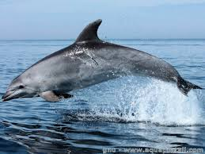

Les mammifères
Ceux avec des poils quoi
Les Mammifères (Mammalia) sont une classe d'animaux vertébrés qui ont pour caractéristique principale que les représentants femelles allaitent leurs juvéniles à partir d'une sécrétion cutanéo-glandulaire spécialisée appelée lait. Leur aire de répartition est planétaire, ils ont conquis une grande partie des niches écologiques de la macrofaune et demeurent un des taxons dominants depuis l'Éocène.
Les mammifères sont les uniques représentants actuels des synapsides (un groupe contenant d'ailleurs leurs ancêtres et les pélycosaures, groupe paraphylétique comprenant les célèbres Dimetrodon et Edaphosaurus) et est incluse avec leurs groupe-frère les sauropsides (reptiles et oiseaux) dans le clade des amniotes au sein de la super-classe des tétrapodes. En 2018, le groupe contient 6 495 espèces qui, selon les classifications scientifiques, sont distribuées en près de 29 ordres, 153 familles et 1 200 genres.
Du point de vue de l'évolution et de l'écologie systémique, les premiers mammifères avaient un mode de vie plutôt terrestre. Ce taxon s'est grandement diversifié au fil de son histoire évolutive, au point qu'un de ses principaux ordres (les chauves-souris) a acquis le vol battu. Un certain nombre de lignées ont évolué vers un mode de vie aquatique partiel (phoques, ours blanc, castor, hippopotame, loutre, campagnol amphibie, ornithorynque...) ou total (cétacés, siréniens...), tout en conservant de leur ancêtre tétrapode la respiration pulmonaire. De même, l'écholocalisation est bien présente dans certains ordres (chiroptères, cétacés) alors qu'elle se fait rare dans le reste du règne animal.
Les mammifères forment une classe d'animaux vertébrés descendant des thérapsides.ls possèdent tous des glandes mammaires, lesquelles pourraient être issues des glandes sébacées ou des glandes sudoripares1. Ils nourrissent tous leurs jeunes avec du lait produit via ces glandes par les femelles. Chez certaines espèces comme Dyacopterus spadiceus et Pteropus capistratus (en), la lactation peut se faire chez les mâles2,3. Parmi les mammifères actuels, les monotrèmes sont les seuls à ne pas posséder de mamelles.
En 2018, le groupe contient 6 495 espèces6 qui, selon les classifications scientifiques, sont distribuées en près de 29 ordres, 153 familles et 1 200 genres7.